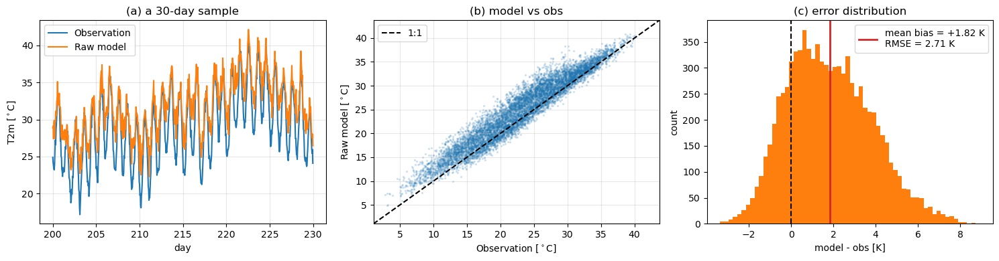
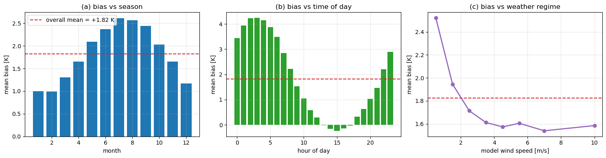
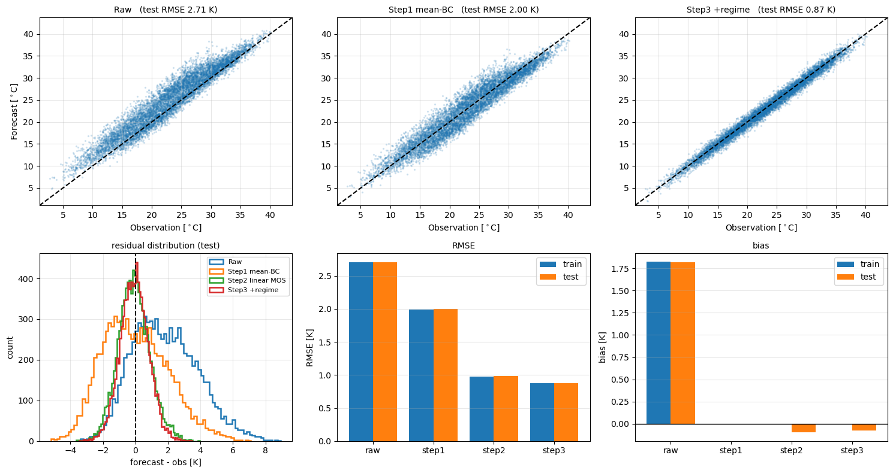
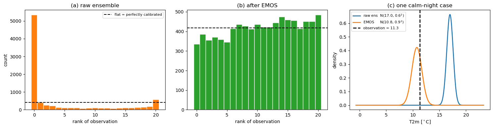
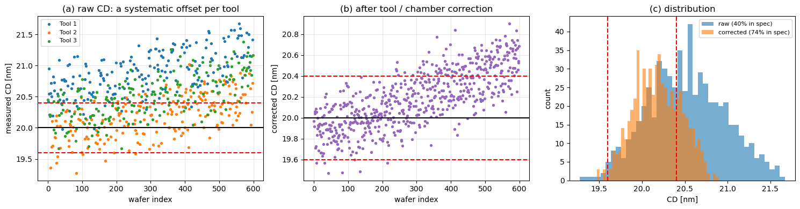
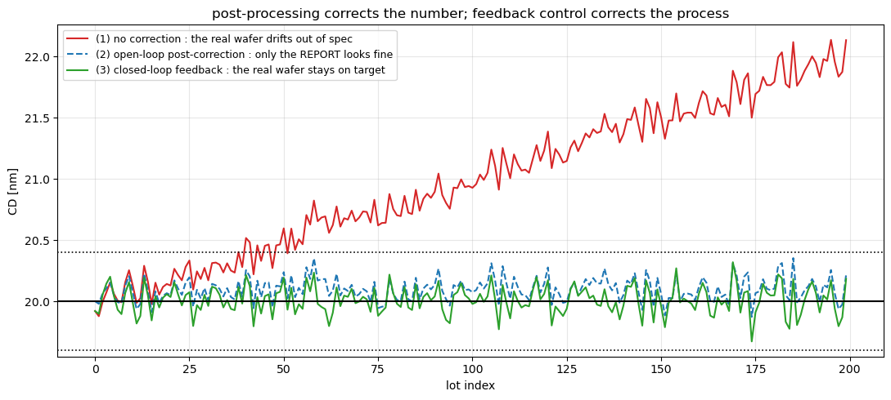

模式輸出統計 Model Output Statistics (MOS)#
用「過去模式錯在哪」的統計規律，把今天模式的原始輸出，修正成更接近實際觀測的預報。
MOS 是數值天氣預報（Numerical Weather Prediction, NWP）最經典的**後處理（post-processing）**框架：模式已經跑完了，我們不重跑物理，只用歷史上「模式預報 \(\leftrightarrow\) 實際觀測」的配對樣本學一組統計關係，把模式輸出翻譯成更貼近真實的答案。
這篇筆記除了講概念，也用一組現場生成的合成資料，把「系統性偏差長什麼樣 \(\rightarrow\) 怎麼一步步校掉」整個實際做一遍。
定義#
最經典的形式就是一條多元線性迴歸：
\(Y\) 是 predictand（預報目標量），你真正想知道的那個數字
通常是局地的實際觀測，例如某測站的 \(T_{2m}\)、某跑道的能見度、某風場的發電量。
這裡有一句要記住的話：predictand 決定你校到哪裡去。校到測站、校到 ERA5、校到雷達，得到的是三種不同的東西。
\(X\) 是 predictor（預報因子），模式與背景資訊提供的一堆數字
模式輸出：\(T_{2m}^{NWP},\ T_{850},\ Z_{500},\ U_{10},\ V_{10},\ RH_{850},\ SLP,\ \cdots\)
氣候與幾何背景：地形高度、經緯度、day of year、一天中的時刻
lead time：Day 1 的誤差結構和 Day 5 完全不一樣
\(\{X_t,Y_t\}_{t=1}^{N}\) 是歷史配對樣本
\(N\) 越長越好，但必須統計性質一致（後面 ERA5 那節會回到這一點）。
舉一個最小的例子：模式今天報 \(T_{2m}=20^\circ\text{C}\)，而過去在「同樣的 \(T_{850}\)、同樣的地面風速、同樣的地形」條件下，實際觀測平均是 \(22^\circ\text{C}\)，那 MOS 學到的就是這條映射，今天它會告訴你答案是 \(22^\circ\text{C}\)。
MOS 不重跑物理模式。它甚至不需要知道「物理上為什麼錯」，只需要知道「在歷史上，什麼樣的模式狀態通常對應什麼樣的誤差」。
為什麼需要 MOS#
① 系統性 bias#
模式長期偏向同一邊，例如
這種誤差不是隨機的，是可以被學起來的。
② 解析度不夠#
全球模式 \(\Delta x \approx 30\ \text{km}\)，但你要預報的是台北的某一個測站。這個網格解析不出：
山谷與地形抬升
海陸風
都市熱島
局地輻合、Lee vortex
所以本質上
這個落差不是把模式多跑幾次就會消失的。
③ 參數化的先天限制#
邊界層、陣風、能見度、低雲這些量，模式裡本來就是用簡化公式估算的，誤差幾乎是結構性的。
示範一：先看見系統性偏差長什麼樣#
底下所有資料都是每次執行時即時生成的（固定亂數種子），沒有任何檔案被存下來。
我們造一組「某測站 2 m 氣溫」的觀測（3 年、逐時），再造一組模式輸出，並刻意種進四種真實世界裡真的會有的病：
常數暖偏差 \(+1.5\ \text{K}\)
日夜溫差被壓平（日循環振幅只剩觀測的 65%）—— 對應解析度不足與邊界層參數化
季節相依的 bias（夏天偏更多）
條件相依的 bias：靜風的夜晚模式偏暖特別多 —— 模式抓不到晴空輻射冷卻
同時輸出兩個之後要拿來當 predictor 的模式變數：風速與相對濕度。
訓練期與驗證期一定要切開：前 2 年配係數，第 3 年驗證。不切開的話，你看到的「改善」有一部分只是模型把訓練期的噪音也背起來了。
import numpy as np
import matplotlib.pyplot as plt
def make_station_data(n_year=3, seed=42):
"""生成一組測站 2m 氣溫的「觀測」與「模式預報」，並種進四種系統性誤差。"""
rng = np.random.default_rng(seed)
n = n_year * 365 * 24 # 逐時
t = np.arange(n)
doy = (t / 24.0) % 365.0 # day of year
hour = t % 24
# ---------- 真實觀測 ----------
seasonal = 8.0 * np.sin(2 * np.pi * (doy - 105) / 365.0) # 季節循環，振幅 8 K
diurnal = 5.0 * np.sin(2 * np.pi * (hour - 9) / 24.0) # 日循環，振幅 5 K
synoptic = np.zeros(n) # 天氣尺度擾動 AR(1)
eps = rng.normal(0.0, 1.0, n)
for i in range(1, n):
synoptic[i] = 0.98 * synoptic[i - 1] + eps[i]
synoptic *= 3.0 / synoptic.std()
T_obs = 22.0 + seasonal + diurnal + synoptic + rng.normal(0.0, 0.4, n)
# ---------- 模式輸出的兩個 predictor ----------
wind = 3.0 + 1.8 * rng.normal(0.0, 1.0, n) + 1.5 * np.sin(2 * np.pi * (doy - 15) / 365.0)
wind = np.clip(wind, 0.2, None)
rh = np.clip(70.0 + 12.0 * rng.normal(0.0, 1.0, n) - 1.5 * synoptic, 5.0, 100.0)
# 夜間權重：黎明前輻射冷卻最強
noct = np.clip(-np.sin(2 * np.pi * (hour - 9) / 24.0), 0.0, None)
# ---------- 模式輸出：刻意種進四種病 ----------
T_mod = (22.0 + seasonal
+ 0.65 * diurnal # 病 2：日夜溫差被壓平
+ synoptic
+ 1.5 # 病 1：常數暖偏差
+ 0.8 * np.sin(2 * np.pi * (doy - 105) / 365.0) # 病 3：夏天偏更多
+ 4.0 * np.exp(-wind / 1.5) * noct # 病 4：靜風夜晚偏暖更多
+ rng.normal(0.0, 0.8, n))
return dict(t=t, doy=doy, hour=hour, noct=noct, n=n,
T_obs=T_obs, T_mod=T_mod, wind=wind, rh=rh)
def scores(pred, obs):
"""回傳 (bias, RMSE)。"""
diff = pred - obs
return diff.mean(), np.sqrt((diff ** 2).mean())
# ===== 主程式執行區 =====
d = make_station_data()
err = d["T_mod"] - d["T_obs"]
# 前 2 年訓練、第 3 年驗證
i_tr = d["t"] < 2 * 365 * 24
i_te = ~i_tr
print("樣本數 = %d (train %d / test %d)" % (d["n"], i_tr.sum(), i_te.sum()))
print("原始模式 test: bias = %+.2f K, RMSE = %.2f K" % scores(d["T_mod"][i_te], d["T_obs"][i_te]))
fig, ax = plt.subplots(1, 3, figsize=(15, 4))
s = slice(24 * 200, 24 * 230)
ax[0].plot(d["t"][s] / 24.0, d["T_obs"][s], lw=1.5, label="Observation")
ax[0].plot(d["t"][s] / 24.0, d["T_mod"][s], lw=1.5, label="Raw model")
ax[0].set_xlabel("day"); ax[0].set_ylabel("T2m [$^\\circ$C]")
ax[0].set_title("(a) a 30-day sample"); ax[0].legend(); ax[0].grid(alpha=.3)
lim = [d["T_obs"].min() - 1, d["T_obs"].max() + 1]
ax[1].scatter(d["T_obs"][i_te], d["T_mod"][i_te], s=2, alpha=.15)
ax[1].plot(lim, lim, "k--", lw=1.5, label="1:1")
ax[1].set_xlim(lim); ax[1].set_ylim(lim)
ax[1].set_xlabel("Observation [$^\\circ$C]"); ax[1].set_ylabel("Raw model [$^\\circ$C]")
ax[1].set_title("(b) model vs obs"); ax[1].legend(); ax[1].grid(alpha=.3)
b_te = err[i_te]
ax[2].hist(b_te, bins=60, color="tab:orange")
ax[2].axvline(0, color="k", ls="--", lw=1.5)
ax[2].axvline(b_te.mean(), color="tab:red", lw=2,
label="mean bias = %+.2f K\nRMSE = %.2f K" % (b_te.mean(), np.sqrt((b_te ** 2).mean())))
ax[2].set_xlabel("model - obs [K]"); ax[2].set_ylabel("count")
ax[2].set_title("(c) error distribution"); ax[2].legend()
plt.tight_layout()
plt.show()
樣本數 = 26280 (train 17520 / test 8760)
原始模式 test: bias = +1.82 K, RMSE = 2.71 K

三張圖各講一件事：
(a) 模式（橘）整體高於觀測（藍），而且日夜擺盪的幅度明顯比觀測小 —— 這就是被壓平的日循環
(b) 散布圖的點群整體壓在 1:1 線的上方。如果誤差是純隨機的，點應該對稱地散在線的兩側
(c) 誤差分布的中心明顯不在 0，mean bias \(\approx +1.8\ \text{K}\)
只要看到 (b) 或 (c) 這種「整團偏一邊」的樣子，就代表這裡有東西可以被統計方法學起來。
示範二：bias 不是一個常數#
最直覺的修法是「算出平均偏差、然後扣掉」。在動手之前，先把誤差分層看一下。
def bias_by_group(values, err, edges):
"""依照 edges 把 values 分箱，回傳每箱的中心與平均誤差。"""
centers, means = [], []
for k in range(len(edges) - 1):
m = (values >= edges[k]) & (values < edges[k + 1])
if m.sum() > 0:
centers.append(0.5 * (edges[k] + edges[k + 1]))
means.append(err[m].mean())
return np.array(centers), np.array(means)
# ===== 主程式執行區 =====
fig, ax = plt.subplots(1, 3, figsize=(15, 4))
overall = err.mean()
month = (d["doy"] // 30.5).astype(int) + 1
m_bias = np.array([err[month == k].mean() for k in range(1, 13)])
ax[0].bar(np.arange(1, 13), m_bias, color="tab:blue")
ax[0].axhline(overall, color="tab:red", ls="--", label="overall mean = %+.2f K" % overall)
ax[0].set_xlabel("month"); ax[0].set_ylabel("mean bias [K]")
ax[0].set_title("(a) bias vs season"); ax[0].legend(); ax[0].grid(alpha=.3)
h_bias = np.array([err[d["hour"] == k].mean() for k in range(24)])
ax[1].bar(np.arange(24), h_bias, color="tab:green")
ax[1].axhline(overall, color="tab:red", ls="--")
ax[1].set_xlabel("hour of day"); ax[1].set_ylabel("mean bias [K]")
ax[1].set_title("(b) bias vs time of day"); ax[1].grid(alpha=.3)
wc, wb = bias_by_group(d["wind"], err, np.array([0, 1, 2, 3, 4, 5, 6, 8, 12]))
ax[2].plot(wc, wb, "o-", color="tab:purple", lw=2)
ax[2].axhline(overall, color="tab:red", ls="--")
ax[2].set_xlabel("model wind speed [m/s]"); ax[2].set_ylabel("mean bias [K]")
ax[2].set_title("(c) bias vs weather regime"); ax[2].grid(alpha=.3)
plt.tight_layout()
plt.show()
print("夏(7月) %+.2f K 冬(1月) %+.2f K" % (m_bias[6], m_bias[0]))
print("凌晨3時 %+.2f K 下午3時 %+.2f K" % (h_bias[3], h_bias[15]))
print("風速<1 m/s %+.2f K 風速>6 m/s %+.2f K" % (wb[0], wb[-1]))

夏(7月) +2.61 K 冬(1月) +1.00 K
凌晨3時 +4.24 K 下午3時 -0.24 K
風速<1 m/s +2.52 K 風速>6 m/s +1.59 K
這張圖是整篇的樞紐：
(a) 夏天偏暖約 \(+2.6\ \text{K}\)，冬天只有 \(+1.0\ \text{K}\)
(b) 半夜偏暖超過 \(+4\ \text{K}\)，下午幾乎沒有偏差
(c) 風速越小、偏差越大 —— 靜風的情況模式錯得最兇
也就是說：
這正是為什麼實務上不會用一個 MOS 模型吃下全部地區、全部 lead time、全部季節：
\[MOS=f(\text{Location},\ \text{LeadTime},\ \text{Season},\ \text{Variable},\ \text{Regime})\]\(MOS_{\text{台北, Day1, 冬}}\) 和 \(MOS_{\text{台北, Day5, 夏}}\) 本來就該是兩個不同的模型。
反過來看，(a)(b)(c) 也直接告訴你 predictor 該去哪裡找：誤差對什麼變數有結構，那個變數就該進設計矩陣。
示範三：一步步把它校掉#
三個階段，全部只在前 2 年配係數，在第 3 年評分：
Step 1 — Mean Bias Correction
Step 2 — Linear MOS（經典 MOS）
Step 3 — 加上 regime-dependent 項
補一個「靜風 \(\times\) 夜間」的交互作用項 \(e^{-U/1.5}\cdot noct\)，去對付示範二 (c) 看到的那個結構。
解法就是最小平方，np.linalg.lstsq 一行 —— MOS 的數學核心真的就只有這樣。
def design_matrix(dd, level):
"""建立 MOS 的設計矩陣。level=1 只有模式本身，2 加氣候循環，3 再加 regime 交互作用。"""
cols = [np.ones_like(dd["T_mod"]), dd["T_mod"]]
if level >= 2:
cols += [dd["wind"], dd["rh"],
np.sin(2 * np.pi * dd["doy"] / 365.0), np.cos(2 * np.pi * dd["doy"] / 365.0),
np.sin(2 * np.pi * dd["hour"] / 24.0), np.cos(2 * np.pi * dd["hour"] / 24.0)]
if level >= 3:
cols += [np.exp(-dd["wind"] / 1.5) * dd["noct"]]
return np.column_stack(cols)
def fit_mos(dd, level, i_train):
"""只用訓練期解最小平方，再套用到全部樣本。"""
X = design_matrix(dd, level)
beta, *_ = np.linalg.lstsq(X[i_train], dd["T_obs"][i_train], rcond=None)
return X @ beta, beta
# ===== 主程式執行區 =====
preds = {"Raw": d["T_mod"]}
preds["Step1 mean-BC"] = d["T_mod"] - err[i_tr].mean() # 只用訓練期的平均偏差
preds["Step2 linear MOS"], beta2 = fit_mos(d, 2, i_tr)
preds["Step3 +regime"], beta3 = fit_mos(d, 3, i_tr)
names = list(preds.keys())
res = {k: (scores(v[i_tr], d["T_obs"][i_tr]), scores(v[i_te], d["T_obs"][i_te])) for k, v in preds.items()}
print("%-18s %-22s %-22s" % ("", "train bias / RMSE", "test bias / RMSE"))
for k in names:
print("%-18s %+6.2f / %5.2f %+6.2f / %5.2f"
% (k, res[k][0][0], res[k][0][1], res[k][1][0], res[k][1][1]))
print("\nStep2 係數 beta =", np.round(beta2, 3))
print("Step3 係數 beta =", np.round(beta3, 3))
fig = plt.figure(figsize=(15, 8))
for j, k in enumerate(["Raw", "Step1 mean-BC", "Step3 +regime"]):
a = fig.add_subplot(2, 3, j + 1)
a.scatter(d["T_obs"][i_te], preds[k][i_te], s=2, alpha=.15)
a.plot(lim, lim, "k--", lw=1.5)
a.set_xlim(lim); a.set_ylim(lim)
a.set_xlabel("Observation [$^\\circ$C]"); a.grid(alpha=.3)
a.set_title("%s (test RMSE %.2f K)" % (k, res[k][1][1]), fontsize=10)
if j == 0:
a.set_ylabel("Forecast [$^\\circ$C]")
a = fig.add_subplot(2, 3, 4)
for k in names:
a.hist(preds[k][i_te] - d["T_obs"][i_te], bins=70, histtype="step", lw=1.8, label=k)
a.axvline(0, color="k", ls="--")
a.set_xlabel("forecast - obs [K]"); a.set_ylabel("count")
a.set_title("residual distribution (test)", fontsize=10); a.legend(fontsize=8); a.grid(alpha=.3)
x = np.arange(len(names))
labels = ["raw", "step1", "step2", "step3"]
a = fig.add_subplot(2, 3, 5)
a.bar(x - .2, [res[k][0][1] for k in names], .4, label="train")
a.bar(x + .2, [res[k][1][1] for k in names], .4, label="test")
a.set_xticks(x); a.set_xticklabels(labels); a.set_ylabel("RMSE [K]")
a.set_title("RMSE", fontsize=10); a.legend(); a.grid(alpha=.3, axis="y")
a = fig.add_subplot(2, 3, 6)
a.bar(x - .2, [res[k][0][0] for k in names], .4, label="train")
a.bar(x + .2, [res[k][1][0] for k in names], .4, label="test")
a.axhline(0, color="k", lw=1)
a.set_xticks(x); a.set_xticklabels(labels); a.set_ylabel("bias [K]")
a.set_title("bias", fontsize=10); a.legend(); a.grid(alpha=.3, axis="y")
plt.tight_layout()
plt.show()
train bias / RMSE test bias / RMSE
Raw +1.83 / 2.70 +1.82 / 2.71
Step1 mean-BC +0.00 / 1.99 -0.00 / 2.00
Step2 linear MOS -0.00 / 0.98 -0.10 / 0.98
Step3 +regime -0.00 / 0.87 -0.08 / 0.87
Step2 係數 beta = [ 0.82 0.897 0.13 -0.008 -0.055 -0.118 -1.787 -1.791]
Step3 係數 beta = [ 7.360e-01 9.230e-01 -3.000e-03 -6.000e-03 -3.000e-03 1.100e-01
-1.405e+00 -1.413e+00 -3.711e+00]

train bias / RMSE |
test bias / RMSE |
|
|---|---|---|
Raw |
\(+1.83\) / \(2.70\) |
\(+1.82\) / \(2.71\) |
Step 1 mean-BC |
\(+0.00\) / \(1.99\) |
\(-0.00\) / \(2.00\) |
Step 2 linear MOS |
\(-0.00\) / \(0.98\) |
\(-0.10\) / \(0.98\) |
Step 3 \(+\) regime |
\(-0.00\) / \(0.87\) |
\(-0.08\) / \(0.87\) |
幾個值得注意的地方：
Step 1 把 bias 修成 0，但 RMSE 只從 2.71 降到 2.00。 平均偏差消失 \(\neq\) 預報變準 —— 示範二看到的那些結構原封不動還在裡面
Step 2 才是真正的躍進（\(2.00 \rightarrow 0.98\)）。差別在於它讓校正量隨季節與時刻改變，而不是全年扣同一個數字
Step 3 再降到 0.87，逼近我們埋進去的噪音下限
train 和 test 的分數幾乎一樣 —— 沒有過擬合。這個檢查一定要做
要誠實講一句：這裡 Step 2 \(\rightarrow\) 3 之所以這麼漂亮，是因為我們自己知道病是怎麼種進去的。真實世界沒有這種特權，你只能靠示範二那種分層診斷去猜 predictor —— 而這正是傳統 MOS 裡 screening regression 在做的事。
工業界常見的手法#
Mean Bias Correction —— \(Y^{corr}=Y^{mod}-B\)
最簡單、最穩、最容易上線。但它假設了 \(Bias=\text{const}\)，而我們剛剛已經看到這個假設不成立。
Linear Regression MOS —— 經典 MOS，就是示範三的 Step 2。
Screening Regression —— 傳統 MOS 的靈魂。候選 predictor 可能有幾百個，先用相關係數 / forward selection 篩，再丟進迴歸：
Predictor
correlation
\(T_{2m}^{NWP}\)
0.92
\(T_{850}\)
0.88
\(RH_{850}\)
0.60
\(Z_{500}\)
0.55
\(U_{10}\)
0.48
\(T_{500}\)
0.20
精神是：不是把所有東西都丟進模型，而是挑出真正有預報價值的模式資訊。
Logistic MOS —— 目標不是數值、而是「事件有沒有發生」時用：
\[P(Y=1)=\frac{1}{1+\exp\left[-\left(\beta_0+\beta_1X_1+\cdots+\beta_nX_n\right)\right]}\]典型輸出是降雨機率（PoP）、起霧機率、結冰機率。
Quantile Mapping —— 把模式的 CDF 映射到觀測的 CDF 上，對極端降水／極端風速特別有效，但不保證保留變數之間的物理關係。
EMOS —— 校正的不是一個數字，而是整個機率分布（下一節示範）。
ML / DL —— Random Forest、XGBoost、LightGBM、LSTM、CNN。強在自動抓非線性交互作用，例如「只有在吹東北風且低層濕度大於 80% 時才會出現的地形降溫效應」。
方法 |
用途 |
優點 |
缺點 |
|---|---|---|---|
Mean Bias Correction |
operational 標配 |
極簡單、穩定 |
只能修平均 |
Linear MOS |
溫度、氣壓等連續量 |
可解釋、成熟 |
非線性能力有限 |
Screening Regression |
predictor 太多時 |
自動選變數 |
依賴統計假設 |
Logistic MOS |
降雨 / 起霧 / 結冰機率 |
直接給機率 |
對事件定義敏感 |
Quantile Mapping |
極端值、水文、風能 |
分布校正強 |
不一定保留物理關係 |
EMOS |
ensemble 預報 |
校正整個分布 |
分布假設較多 |
RF / XGBoost |
現代業界主流 |
非線性、實用 |
解釋性較低 |
NN / CNN / LSTM |
高維、空間場、時序 |
表達能力強 |
需要大量資料 |
傳統 regression MOS 到今天仍然在 operational 系統裡跑。它的優勢不是「先進」，而是 穩定、可解釋、算得快，而且壞掉的時候你知道為什麼。
示範四：EMOS —— 不只修中心值，也要修離散度#
Ensemble 預報給的不是一個數字，而是一群 members。它可能同時有兩個病：中心偏掉，以及 spread 太小（under-dispersive，過度自信）。
EMOS（Ensemble Model Output Statistics） 同時校正這兩件事：
其中 \(S^{2}\) 是 ensemble 自己的變異數。\(\mu\) 一樣用最小平方配；\(\sigma^{2}\) 則用「殘差平方對 ensemble 變異數迴歸」來配 —— 也就是讓模型學會：ensemble 散得開的時候，我確實比較不確定。
def make_ensemble(dd, m=20, seed=7):
"""由模式預報生成一個刻意 under-dispersive 的 ensemble。"""
rng = np.random.default_rng(seed)
shared = rng.normal(0.0, 0.35, dd["n"]) # 共同擾動
return dd["T_mod"][:, None] + shared[:, None] + rng.normal(0.0, 0.55, (dd["n"], m))
def rank_of_obs(members, obs):
"""觀測值在 ensemble members 中的排名，用來畫 rank histogram。"""
return (members < obs[:, None]).sum(1)
# ===== 主程式執行區 =====
ens = make_ensemble(d)
ens_mean, ens_std = ens.mean(1), ens.std(1, ddof=1)
print("ensemble 宣稱的 spread = %.2f K，但它實際的誤差 std = %.2f K -> 過度自信"
% (ens_std.mean(), (ens_mean - d["T_obs"]).std()))
# --- 校正中心值 mu ---
X = np.column_stack([np.ones(d["n"]), ens_mean, d["wind"], d["rh"],
np.sin(2 * np.pi * d["doy"] / 365.0), np.cos(2 * np.pi * d["doy"] / 365.0),
np.sin(2 * np.pi * d["hour"] / 24.0), np.cos(2 * np.pi * d["hour"] / 24.0),
np.exp(-d["wind"] / 1.5) * d["noct"]])
beta_mu, *_ = np.linalg.lstsq(X[i_tr], d["T_obs"][i_tr], rcond=None)
mu = X @ beta_mu
# --- 校正離散度 sigma：殘差平方 對 ensemble 變異數迴歸 ---
Xs = np.column_stack([np.ones(d["n"]), ens_std ** 2])
beta_s, *_ = np.linalg.lstsq(Xs[i_tr], ((d["T_obs"] - mu) ** 2)[i_tr], rcond=None)
sigma = np.sqrt(np.clip(Xs @ beta_s, 1e-3, None))
print("sigma^2 = %.3f + %.3f * S^2 -> 平均 sigma = %.2f K" % (beta_s[0], beta_s[1], sigma.mean()))
rng = np.random.default_rng(11)
ens_cal = mu[:, None] + sigma[:, None] * rng.normal(0, 1, (d["n"], 20))
fig, ax = plt.subplots(1, 3, figsize=(15, 4))
flat = i_te.sum() / 21.0
ax[0].hist(rank_of_obs(ens[i_te], d["T_obs"][i_te]), bins=np.arange(22) - .5, color="tab:orange", edgecolor="w")
ax[0].axhline(flat, color="k", ls="--", label="flat = perfectly calibrated")
ax[0].set_xlabel("rank of observation"); ax[0].set_ylabel("count")
ax[0].set_title("(a) raw ensemble"); ax[0].legend(fontsize=8)
ax[1].hist(rank_of_obs(ens_cal[i_te], d["T_obs"][i_te]), bins=np.arange(22) - .5, color="tab:green", edgecolor="w")
ax[1].axhline(flat, color="k", ls="--")
ax[1].set_xlabel("rank of observation")
ax[1].set_title("(b) after EMOS")
# 挑一個靜風夜晚的個案
k = int(np.argmax(np.where(i_te, d["noct"] * np.exp(-d["wind"] / 1.5), -np.inf)))
xx = np.linspace(d["T_obs"][k] - 12, d["T_obs"][k] + 12, 400)
gauss = lambda x, m_, s_: np.exp(-(x - m_) ** 2 / (2 * s_ ** 2)) / (s_ * np.sqrt(2 * np.pi))
ax[2].plot(xx, gauss(xx, ens_mean[k], ens_std[k]), lw=2, label="raw ens N(%.1f, %.1f$^2$)" % (ens_mean[k], ens_std[k]))
ax[2].plot(xx, gauss(xx, mu[k], sigma[k]), lw=2, label="EMOS N(%.1f, %.1f$^2$)" % (mu[k], sigma[k]))
ax[2].axvline(d["T_obs"][k], color="k", ls="--", lw=2, label="observation = %.1f" % d["T_obs"][k])
ax[2].set_xlabel("T2m [$^\\circ$C]"); ax[2].set_ylabel("density")
ax[2].set_title("(c) one calm-night case"); ax[2].legend(fontsize=8)
plt.tight_layout()
plt.show()
ensemble 宣稱的 spread = 0.54 K，但它實際的誤差 std = 2.03 K -> 過度自信
sigma^2 = 0.827 + 0.172 * S^2 -> 平均 sigma = 0.94 K

(a) 原始 ensemble 的 rank histogram 幾乎全部堆在最左邊 —— 觀測值比所有 members 都低。這代表它同時「又暖、又過度自信」
(b) EMOS 之後接近平坦，代表「它宣稱的機率」和「實際發生的頻率」對得上了
(c) 單一個案：原始 ensemble 給了一個又偏又窄的分布，觀測值落在它幾乎為零的尾巴上；EMOS 把中心移正，同時把分布加寬
這一句很關鍵：
原始 ensemble 宣稱自己的 spread 只有 \(0.5\ \text{K}\)，但它的實際誤差是 \(2.0\ \text{K}\)。一個宣稱準到 \(\pm0.5\)、實際上會錯 \(2.0\) 的預報，比一個老實說「我大概會錯 2 度」的預報更危險 —— 因為下游的人會照著它去做決策。
對電力調度、風力／太陽能、航空、水庫操作這些要算風險的產業，校正離散度往往比校正中心值更值錢。
產業應用#
風力發電：把氣象變數變成 MW#
情境：陸域風場位在複雜地形的山脊上。模式因為地形被平滑化，\(100\ \text{m}\) 高度的風速長期比實際觀測低約 \(2\ \text{m/s}\)
做法：拿測風塔兩年的實際風速與發電量當 predictand，模式的各層風場、風向、溫度遞減率（大氣穩定度）當 predictor，訓練 Gradient Boosting
結果：不只補回那 \(2\ \text{m/s}\)，還學到了「特定風向下的尾流效應」；而且輸出的直接是 MW 發電功率，用來避免電網調度不準的違約罰款
航空：把相對濕度變成起降決策#
情境：模式報不出「某一條跑道」的能見度，塔台拿到相對濕度也無法決策
做法：用近地面溫濕度、邊界層風場、液態水含量，加上當地氣候特性（例如平流霧的好發季節），做 logistic MOS
結果：輸出變成「明晨 6 點跑道能見度低於 800 m 的機率為 75%」，直接對應到要不要多帶油、要不要規劃備降
兩個案例的共同點：MOS 真正的產業價值，是把氣象變數轉換成決策指標。使用者要的從來不是溫度，是「我今天到底該不該做這件事」。
三個容易搞混的東西#
映射 |
目的 |
|
|---|---|---|
Bias Correction |
\(X_{model}\rightarrow X_{corrected}\) |
讓模式的統計分布靠近參考資料 |
MOS |
\(X_{model}\rightarrow Y_{observation}\) |
用模式資訊去預測實際觀測 |
Downscaling |
\(X_{coarse}\rightarrow Y_{fine}\) |
從大尺度資訊產生小尺度細節 |
三者常常一起出現，但問的問題不一樣：bias correction 修的是模式自己，MOS 跨到另一個變數（觀測），downscaling 跨的則是尺度。
ERA5 是怎麼來的，跟 MOS 什麼關係#
ERA5 是 reanalysis（再分析）。ECMWF 用一個固定版本的預報系統，搭配 4D-Var 資料同化，把 1940 年至今累積的歷史觀測 —— 衛星、地面站、探空、飛機 —— 從頭到尾重跑了一次：
「重跑」這件事帶來兩個關鍵性質：
每一步都有觀測把模式拉回來。
它不是放著自由積分的預報，而是
模式短期預報\(\rightarrow\)比對觀測\(\rightarrow\)同化修正\(\rightarrow\)再往前積分的反覆循環。所以它用得到「事後才拿得到」的觀測資訊。系統版本固定，所以時間上是一致的。
不會發生「1980 年用 1980 年的模式、2010 年用 2010 年的模式」，也就不會有因為系統換版而生出來的假趨勢。
第 2 點正是它跟 MOS 的接點。回頭看定義那一節：MOS 需要一批夠長、而且統計性質一致的歷史配對樣本。這種樣本不會從天上掉下來 —— 它正是靠 reanalysis 以及對應的 reforecast / hindcast 重跑出來的。
所以兩者的關係是接力，不是替代：
作用時機 |
在做什麼 |
|
|---|---|---|
Data Assimilation（ERA5） |
模式積分的過程中 |
把觀測吃進模式狀態，得到最佳估計 |
MOS |
模式跑完之後 |
用統計關係修正模式輸出 |
最後一個必須講清楚的限制：ERA5 的水平解析度約 \(31\ \text{km}\)，仍然有模式誤差，在觀測稀疏的地區也會有偏差。所以拿它當 predictand 的時候，你校正的目標是「ERA5 所描述的大氣」，而不是真值 —— 這正好呼應前面那一句：predictand 決定你校到哪裡去。
跨領域類比：半導體製程控制#
「模型／設備再好，實際輸出仍然存在系統性偏差，而真正的能力來自長期資料累積出來的診斷與校正」—— 這個結構不只出現在氣象。
先講一個直覺：有 EUV 光刻機 \(\neq\) 做得出高良率晶片。光刻只是整條 process chain 的一環，蝕刻、沉積、清洗、量測、缺陷管理、設備匹配都要一起配合。良率是整條鏈的乘積，不是單一設備的函數。
把兩邊的角色對起來看：
氣象 |
半導體 |
|---|---|
NWP Model |
製程設備 / 製程模型 |
模式預報值 |
製程結果（實際做出來的） |
Observation |
wafer measurement（量測值） |
Model Bias |
製程偏差 |
MOS |
製程 correction model |
Historical Forecast |
historical wafer data |
Forecast Error |
defect / yield loss |
Statistical Post-processing |
Statistical Process Control |
Ensemble Spread |
製程不確定性 |
Calibration |
equipment matching |
Downscaling |
特定產品的製程最佳化 |
下面用跟示範一完全相同的骨架，把資料換成 wafer 的 CD（critical dimension，關鍵尺寸）量測：目標 \(20\ \text{nm}\)、規格 \(\pm0.4\ \text{nm}\)，三台機台各有固定 offset，再加上腔體效應與隨批次緩慢累積的 drift。
TARGET, SPEC_LO, SPEC_HI = 20.0, 19.6, 20.4
def make_wafer_data(n_wafer=600, seed=3):
"""生成 wafer 的 CD 量測：tool offset + chamber offset + 緩慢 drift + 隨機變異。"""
rng = np.random.default_rng(seed)
tool = rng.integers(0, 3, n_wafer)
chamber = rng.integers(0, 2, n_wafer)
tool_off = np.array([+0.50, -0.30, +0.10]) # 三台機台各自的系統性偏差 [nm]
cham_off = np.array([+0.25, -0.15])
drift = 0.0012 * np.arange(n_wafer) # 隨批次緩慢漂移
cd = TARGET + tool_off[tool] + cham_off[chamber] + drift + rng.normal(0, 0.18, n_wafer)
return tool, chamber, cd
def remove_group_offset(cd, group, i_train):
"""用訓練期的組平均估計各組 offset 並扣掉 —— 和 Step1 mean-BC 是同一件事。"""
out = cd.copy()
for k in np.unique(group):
m = group == k
out[m] -= cd[m & i_train].mean() - TARGET
return out
# ===== 主程式執行區 =====
tool, chamber, cd = make_wafer_data()
n_w = cd.size
i_w_tr = np.arange(n_w) < 300 # 前 300 片當「歷史資料」
cd_adj = remove_group_offset(cd, tool, i_w_tr)
cd_adj = remove_group_offset(cd_adj, chamber, i_w_tr)
in_spec = lambda v: 100.0 * ((v > SPEC_LO) & (v < SPEC_HI)).mean()
print("落在規格內：raw = %.1f%% -> corrected = %.1f%%" % (in_spec(cd), in_spec(cd_adj)))
fig, ax = plt.subplots(1, 3, figsize=(15, 4))
for k, c in zip(range(3), ["tab:blue", "tab:orange", "tab:green"]):
m = tool == k
ax[0].scatter(np.arange(n_w)[m], cd[m], s=8, color=c, label="Tool %d" % (k + 1))
for a in ax[:2]:
a.axhline(TARGET, color="k", lw=1.5)
a.axhline(SPEC_LO, color="r", ls="--"); a.axhline(SPEC_HI, color="r", ls="--")
a.set_xlabel("wafer index"); a.grid(alpha=.3)
ax[0].set_ylabel("measured CD [nm]"); ax[0].set_title("(a) raw CD: a systematic offset per tool"); ax[0].legend(fontsize=8)
ax[1].scatter(np.arange(n_w), cd_adj, s=8, color="tab:purple")
ax[1].set_ylabel("corrected CD [nm]"); ax[1].set_title("(b) after tool / chamber correction")
ax[2].hist(cd, bins=40, alpha=.6, label="raw (%.0f%% in spec)" % in_spec(cd))
ax[2].hist(cd_adj, bins=40, alpha=.6, label="corrected (%.0f%% in spec)" % in_spec(cd_adj))
ax[2].axvline(SPEC_LO, color="r", ls="--"); ax[2].axvline(SPEC_HI, color="r", ls="--")
ax[2].set_xlabel("CD [nm]"); ax[2].set_ylabel("count")
ax[2].set_title("(c) distribution"); ax[2].legend(fontsize=8)
plt.tight_layout()
plt.show()
落在規格內：raw = 39.5% -> corrected = 74.5%

(a) 長得跟示範一的圖幾乎一樣：三台機台各自有固定的 offset，整群資料被系統性地推離目標值。把 tool 與 chamber 的效應扣掉之後，落在規格內的比例從 \(39.5\%\) 拉到 \(74.5\%\)。
到這裡為止，它跟 MOS 是同一件事：用歷史資料估出系統性偏差，然後扣掉。
但 (b) 也留下一條尾巴 —— 還有一個隨批次緩慢上升的 drift 沒有被處理掉。而這正好帶出兩個領域最關鍵的差別。
def run_process(n_lot=200, drift=0.010, noise=0.10, lam=0.3, gain=0.8, seed=5):
"""比較三種策略：什麼都不做 / 事後修報告(open-loop) / 回饋控制製程(closed-loop)。"""
rng = np.random.default_rng(seed)
e = rng.normal(0, noise, n_lot)
# (1) 什麼都不做：實際 CD 一路漂走
no_ctrl = TARGET + drift * np.arange(n_lot) + e
# (2) open-loop post-correction：製程沒動，只把「報告上的數字」扣掉估計偏差
est = np.array([no_ctrl[max(0, i - 20):i + 1].mean() - TARGET for i in range(n_lot)])
reported = no_ctrl - est
# (3) closed-loop feedback：每批量測後用 EWMA 回饋調整製程 setpoint
closed, u, ewma = np.zeros(n_lot), 0.0, 0.0
for i in range(n_lot):
c = TARGET + drift * i + u + e[i] # u 是被控制器調整過的 setpoint 偏移
closed[i] = c
ewma = lam * (c - TARGET) + (1 - lam) * ewma
u -= gain * ewma
return no_ctrl, reported, closed
# ===== 主程式執行區 =====
no_ctrl, reported, closed = run_process()
fig, ax = plt.subplots(figsize=(11, 5))
ax.plot(no_ctrl, lw=1.5, color="tab:red",
label="(1) no correction : the real wafer drifts out of spec")
ax.plot(reported, lw=1.5, ls="--", color="tab:blue",
label="(2) open-loop post-correction : only the REPORT looks fine")
ax.plot(closed, lw=1.5, color="tab:green",
label="(3) closed-loop feedback : the real wafer stays on target")
ax.axhline(TARGET, color="k", lw=1.5)
ax.axhline(SPEC_LO, color="k", ls=":", lw=1.2); ax.axhline(SPEC_HI, color="k", ls=":", lw=1.2)
ax.set_xlabel("lot index"); ax.set_ylabel("CD [nm]")
ax.set_title("post-processing corrects the number; feedback control corrects the process")
ax.legend(fontsize=9); ax.grid(alpha=.3)
plt.tight_layout()
plt.show()
print("實際做出來的晶片落在規格內：不控制 = %.1f%%, 閉迴路控制 = %.1f%%"
% (in_spec(no_ctrl), in_spec(closed)))

實際做出來的晶片落在規格內：不控制 = 21.5%, 閉迴路控制 = 100.0%
三條線的意思完全不同：
紅線：什麼都不做，實際做出來的晶片一路漂出規格
藍虛線：事後把數字修對了 —— 報告很漂亮，但實體晶片還是紅線那一條
綠線：每批量測完就回饋去調整製程 setpoint，真正做出來的晶片被拉回目標
MOS \(\approx\) open-loop post-processing
\[\text{Model}\ \rightarrow\ \text{Error}\ \rightarrow\ \text{Correction}\]修的是報告。
製程控制 \(\approx\) closed-loop control
\[\text{Process}\rightarrow\text{Measurement}\rightarrow\text{Detect}\rightarrow\text{Diagnose}\rightarrow\text{Adjust}\rightarrow\text{Prevent}\]修的是現實。
這個差別不是誰比較高級，而是兩個領域的物理條件不同：氣象沒得選。你改不了大氣，只能改你對它的描述 —— 所以預報的產品本來就是「那個數字」，把數字修對就等於把產品做對。半導體則可以真的回頭去動製程，所以只停在 open-loop 是浪費。
也因此，把「某家公司靠一張 bias correction table 贏過對手」當成解釋，是過度簡化了。比較合理的說法是：長期累積的製程資料、設備匹配、缺陷分析與良率學習，共同形成了一套持續更新的高維校正 + 回饋控制系統，而不是一張查得到的表。
抽象成兩個式子：
實務上的坑#
Data drift / 模式改版
NWP 一升級（解析度、參數化），舊的 \(\beta\) 就部分失效。業界的解法是維持一套 reforecast / hindcast 來重建訓練樣本，或用 online learning、transfer learning 讓 MOS 快速跟上新版模式的誤差特徵。
樣本長度 vs 一致性的取捨
訓練期拉長樣本就變多，但一旦跨過模式改版，樣本就不同質了。這兩件事永遠在打架。
predictand 決定校正目標
校到測站、校到 ERA5、校到雷達，做出來的是三個不同的產品。
不要用訓練期的分數說服自己
示範三如果只看 train 那一欄，你會得到一樣好看的數字，但那不代表明天有用。
參考資料#
[1]Glahn & Lowry (1972), The Use of Model Output Statistics (MOS) in Objective Weather Forecasting, J. Appl. Meteor. 11(8), 1203-1211 — MOS 的奠基文獻
[2]NOAA MDL — Model Output Statistics — operational MOS 的官方說明
[3] Wilks (2011), Statistical Methods in the Atmospheric Sciences (3rd ed.), Academic Press — 大氣統計方法的權威教科書
[6]Hersbach et al. (2020), The ERA5 global reanalysis, QJRMS 146, 1999-2049
[8]Samsung Semiconductor — Yield — 良率受設備精度、潔淨室、製程條件等多重因素影響